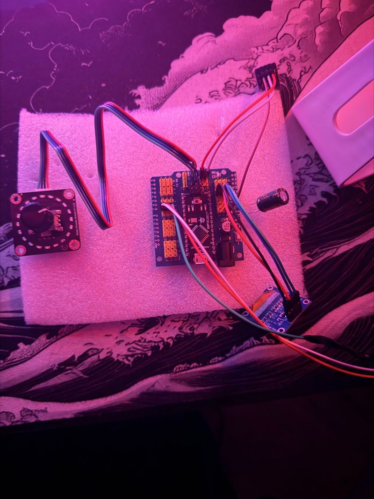
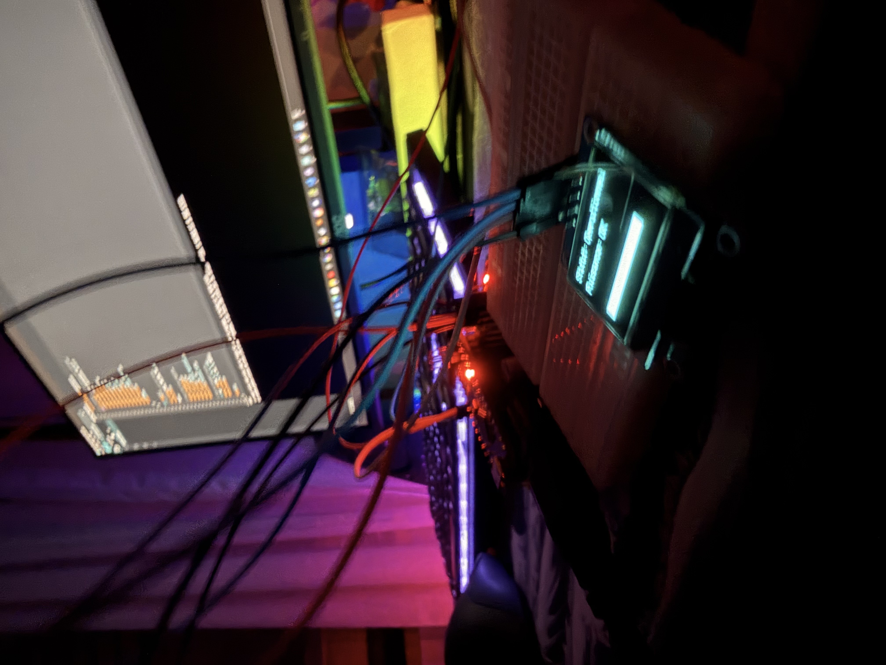

>>> SECTION : OVERVIEW
CoreLight est un système RGB réactif basé sur Arduino.
- Contrôle WS2812B
- Réactivité audio (micro + FFT)
- Synchronisation ventilateurs RGB PC
- Ambiance cyberpunk / neon
>>> SECTION : WORKLOG
Arduino + WS2812B
Détection audio basique
Mapping ventilateurs RGB
Interface PC (Serial / Python)
>>> SECTION : CHECKPOINTS
[ OK ] Alim 5V stable
[ OK ] Première boucle FastLED
[ OK ] Détection crête audio
[ WORK ] Mapping ARGB ventilateurs
>>> SECTION : HARDWARE PROTOTYPE


>>> BANDEAU WS2812B – 30 LEDs
Clique sur une LED pour changer sa couleur individuellement
>>> SECTION : SCHEMATICS
SCHÉMA EN COURS DE TRANSMISSION
Les plans de câblage et captures de montage seront uploadés prochainement.
>>> SECTION : FOOTAGE
Unboxing
Capture d'unboxing du prototype CoreLight. Utilise le lecteur pour lancer, mettre en pause et naviguer dans la vidéo.
>>> SECTION : DATALOG
>>> SECTION : QUERY
QUERY DATABASE EN CONSTRUCTION
Les questions fréquentes sur le projet CoreLight apparaîtront ici.